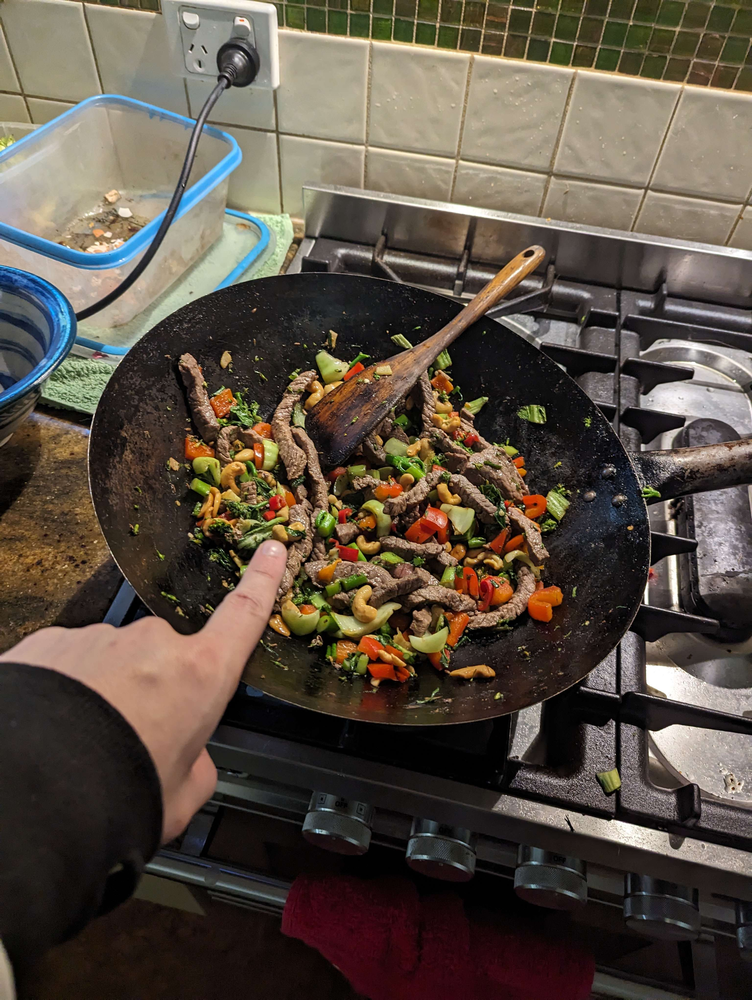

Beef Stirfry

Ingredients
Makes two serves
- 500g Beef Stirfry Strips
- 1tsp Sea Salt
- 1tsp Cracked Black Pepper
- 1 Long Chilli, Red
- 1tbsp Garlic Infused Olive Oil
- 5cm Piece of Ginger
- 1 Red Capsicum
- 8 Stalks of Broccolini, Chopped
- 2 Small Bok Choy, Roughly Chopped
- 1/2 Cup Peanuts
- 1/4 Cup Soy Sauce
- 1tsp White Sugar
- 1/2 Bunch Corriander, Fresh
- 2 Cup Basmati Rice
Steps
- Boil water for rice in a large pot, cook as per instruction on packet.
- Sprinkle salt and pepper on beef. Heat some garlic oil in large frying pan, add chilli and ginger, stir for 1-2mins.
- Heat remaining oil and quickly cook the beef in batches until browned.
- Add the vegetables, peanuts and chilli/ginger mixture as well as the soy sauce and sugar. Stir for 2-3mins.
- Add the coriander at the last minute and serve with cooked basmati rice.